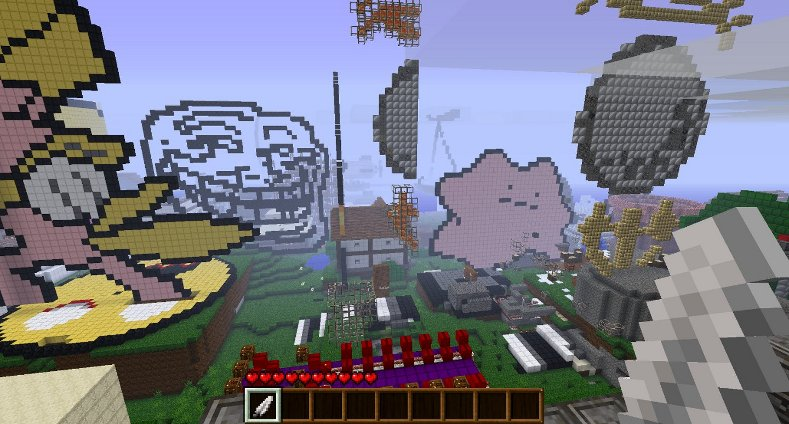
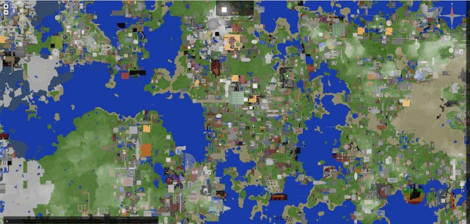

A silly project I undertook recently: collecting over 3000 individual Minecraft creation schematics and merging them all into a single, playable world. The results are, well... about as crazy as you would expect:

Here is a dynmap birds-eye view:

You can grab a copy of the world here if you want to mess around in it!
Methodology
The key to this project is the PhoenixTerrainMod customisable world generator, which provides a system for integrating player-designed objects into the generation process. I originally sourced 5488 schematic files from a crawl of the mcschematics.com forums. Converting these to the .bo2 format required by PTM was a somewhat arduous task-- kudos to the lovely @unnali for rewriting my Ruby script in C and rendering it at least 10x faster! Of the original dataset, I ended up excluding every object with a duplicate filename or over 100kb in size (total of 2368 files) to fit time and memory constraints.
Downloads
5488 raw .schematic files (74.8MB): 5488schematics.tar.bz2
3120 processed .bo2 files (19.7MB): 3120bobs.tar.bz2
Collage world directory (50.5MB): collage.tar.bz2
.schematic -> .bo2 mass converter: sch2bob on Github